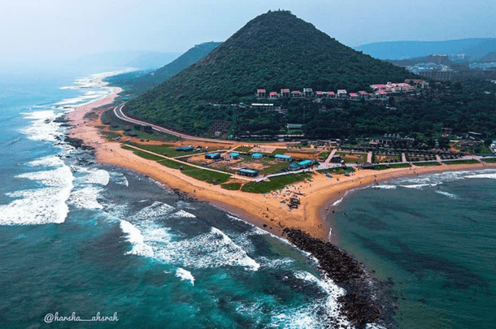
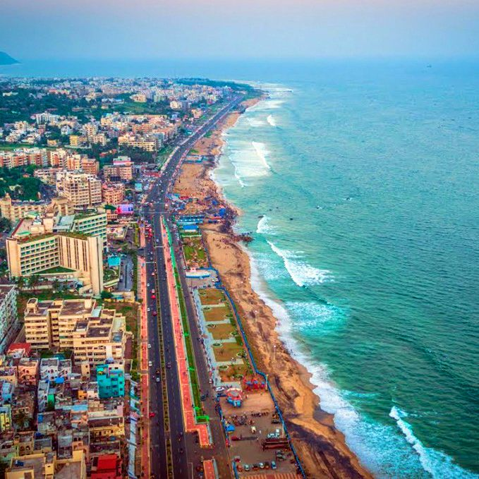

is a major metropolitan city in the state of Andhra Pradesh, and it holds the distinction of being the largest city in the state. The rich history of Visakhapatnam dates back over 2,500 years, with its present name potentially given by the Eastern Chalukyas king to their family deity Visakha in 1010 CE.[1] Visakhapatnam was once part of the Kalinga Kingdom around 260 BC before coming under the influence of the Maurya Empire. During this period, Buddhism flourished, leading to the construction of significant monuments between the 2nd century BCE and the 2nd century CE. The city's documented existence begins in 1068 CE, under the rule of King Vishakhavarman. In the 7th century, Visakhapatnam witnessed the conquest of the Eastern Chalukyas, and by the 14th century, it became part of the Reddi Kingdom. The era of European colonization commenced in 1630 with the Dutch, followed by the British taking control in 1757 after a brief interlude of French influence. The Battle of Vizagapatam in 1804 during the Napoleonic Wars emphasized the strategic importance of the city. Following India's independence in 1947, Visakhapatnam became part of the Madras Presidency, later becoming an integral part of Andhra Pradesh. Today, it stands as the largest city in Andhra Pradesh, playing a pivotal role in the state's economy. The city's industrial growth saw a transformative phase with the inauguration of Visakhapatnam Port operations on December 19, 1933, firmly establishing it as a major industrial centre.
Ancient History
Historically, around 260 BC, the region was part of the Kalinga Kingdom. Following the victory of Ashoka in the Kalinga War, the area came under the rule of the Maurya Empire.[2] During Ashoka's rule, the region witnessed a dominance of Buddhism, leading to the construction of numerous Buddhist monuments like Thotlakonda, Bavikonda, and Bojjannakonda.[3] Between the 2nd century BCE and the 2nd century CE, Buddhism played a key role in this region. After the Maurya Empire, the region came under Satavahana rule.[4] According to a Tamra-shashan found, the first documented evidence of the city dates back to 1068 CE as a small village on the banks of Bay of Bengal. It shows that Visakhapatnam was ruled by King Visakhavarma of the Madhura Raja dynasty, hailing from the Kalinga empire. This historical fact is substantiated by Inscription No. 187 of 1893, providing tangible evidence of the village's existence.[5] Simhachalam Temple, built by the Anantavarman Chodaganga of Ganga dynasty kings of the Kalinga empire in 1078 A.D., stands as a testament to the ancient history of the region.
Eastern Chalukyas, Gajapati and Vijayanaraga Empires
Sri Krishna Devaraya Vijayastambha (Victory Pillar) at Potnuru
Visakhapatnam was subsequently conquered by the Eastern Chalukyas in the 7th Century CE, who ruled over it with their headquarters at Vengi.[7] During their regime, the significant Simhachalam Temple was renovated, marking a crucial historical development. The marital relationship between the Eastern Chalukyas and the Cholas led to the city being named Kulothunga Cholapatnam, in honour of Kulottunga I.[8] The first Masjid was constructed on a hill near Kotaveedi in Mid 13th century, now known as Darga Hill
In the 14th century Visakhapatnam in the Reddi kingdom the whole Coastal Andhra region in that period.[11] The region was later ruled by the Gajapati Empire from 1434 to 1565 A.D. Golconda Nawab Quli Qutub Shah occupied Visakhapatnam, and together with Srikakulam, the area became known as Chicacole circle during 1599.
In 1515 AD, under the rule of Krishnadevaraya, the Vijayanagara Empire successfully conquered North Coastal Andhra by defeating the Gajapati Empire in the Battle of Potnuru near Padmanabham. To commemorate this victory, Krishnadevaraya erected the Vijayasthupa, a victory pillar. Unfortunately, the historic monument is currently in a state of disrepair.[12] Additionally, during his visit to the Simhachalam Temple, Krishnadevaraya presented valuable ornaments to the temple, adding to its cultural and historical significance.
European Colonization
In 1630, the Dutch made their entry into Visakhapatnam at Bheemili, marking the initiation of European influence in the Dutch Coromandel region. Subsequently, in 1650, they devised the first city layout plan for Visakhapatnam. The Dutch also undertook the construction of the old Dutch fort complex in Bheemili.[14] St. Peter's Church, commonly known as the Red Church and dating back to the 17th century, stands prominently in Gnanapuram amid the surrounding ruins.[15] The Dutch Cemetery in Bheemili, near Visakhapatnam bears a signboard indicating that it was in operation from 1661 to 1826.[16] As part of their architectural contributions, three notable buildings were erected in the city of . Among them, two structures, namely Government Queen Mary High School and the District Registrar Office, have endured the test of time. Unfortunately, the third building, the Old Vizag District Education building, was later demolished to make way for a shopping complex.
In 1683, the East India Company initiated trade activities in Visakhapatnam after reaching an agreement with Qutb Shahi dynasty. However, complications arose when the Mughal Emperor Aurangazeb seized control of the region, leading to the unfortunate killing of some English soldiers. Subsequently, a new agreement was negotiated, allowing the resumption of trade activities.[18] East India Company initiated the construction of a fort around their factory. Eventually, this location evolved into Kotaveedi, as "Kota" translates to the fort in Telugu.[19] They changed the name from Visakhapatnam to Vizagapatam. Amidst the ongoing Carnatic wars between the British and the French, the Britishers initiated the construction of a fort at the end of the 17th century to counter the French presence. This fort, spanning from the sea to the current Coastal battery, Upputeru, and Yarada Hills, was completed in 1726.[20][21] Gunner Street served as the depot for Artillermen during that period.[22] Founded in 1727 by the Rajaka community, Waltair evolved into a British settlement.[9] Initially linked to the city by two roads, these pathways later became Waltair Main Road and Beach Road, with some adjustments along the way.[23] Documented evidence reveals that the population of Vizag in 1750 was recorded at 3000 individuals.
On the 23rd of November 1753, the French assumed control of Chicacole-Visakhapatnam from the Nizam Nawab. This happened because the Nawab didn't make the monthly payments as per the Aurangabad Agreement, and the French aided the Nawab in retaining those territories. Subsequently, territories belonging to the Nawab, including Chicacole, Rajahmundry, Eluru, and Mustafanagara (Kondaveedu), were annexed into French territory. Meanwhile, the British continued to settle in Vizag during that period.[20] In a significant turn of events, Marquis de Bussy-Castelnau issued a warning notice to the East India Company of Vizag on the 24th of June 1757. The British, in response, surrendered at 11 pm on the same day, leading to the victory of Bussy. Subsequently, Bussy took charge of establishing order in Vizag and departed from the city with his army in 1758. Pusapati Ananda Gajapati Raju of Vizianagara Samsthanam occupied Vizag in 1758, helping the British regain their settlements.